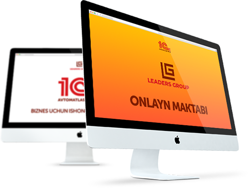

1C dasturini onlayn o'zbek tilida o'rganishingiz mumkin
Agarda siz
- talab faqat va faqat oshib boruvchi yuqori daromadli kasb egasi bo‘lishni;
- asosiy ishingizdan ajralmagan xolatda qo‘shimcha ravishda daromad olishni;
- ayni paytda raqobatchilar kam bo‘lgan mutaxassislikni o‘rganmoqchi bo‘lsangiz
U xolda siz to'g'ri manzildasiz